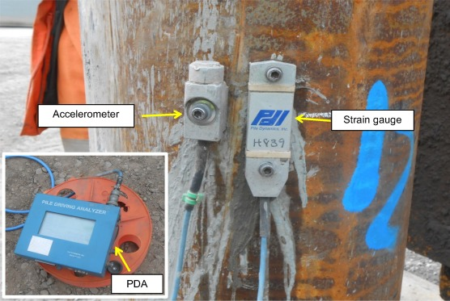
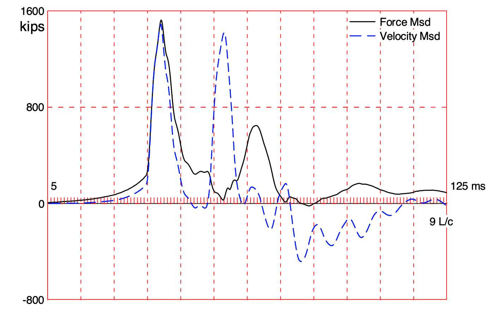
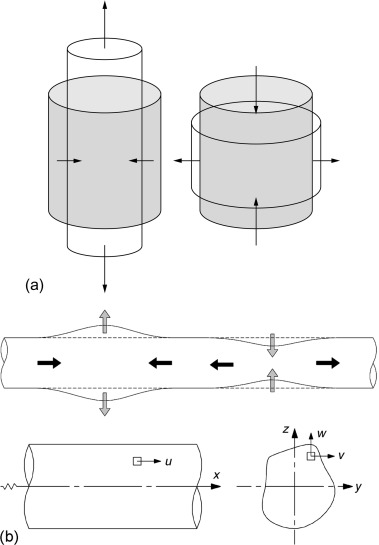

Environmental noise assessment
Pile-driving is a noisy process. The noise from pile-driving can be a nuisance to neighboring properties and disturbing (and even lethal) to wildlife. Sound from pile-driving comes from the impact between the pile and hammer and from the deformation of the pile as compression and tension waves travel through the pile. The noise from the waves traveling through the pile are particularly important under water, where they have the most impact on wildlife.
The Environmental noise assessment enhancement will use the PDA strain and velocity measurements to estimate the volume in air and water from a single blow to the pile. The noise attenuation with distance from the pile will be compared to different thresholds, providing an estimate for the distance where various noise issues are of concern. Combined with a pile-driving log with blows per minute (BPM) and blows per foot (BPF), the noise model will provide a range of distances and time durations over which the noise issues are of concern. A mathematical framework for the combustion model will is described below.
The focus of this option is environmental regulation compliance.
PDA data and instruments
Pile Driving Analysis (PDA) is the name of a specific set of instruments and calculations used to measure wave transmission through a pile as it’s driven and estimate its capacity. Generally, PDA is performed on only a small percentage of piles in a given project because it’s expensive to perform and slows down the construction (because of the instrument installation). PDA data contains measurements of strain and acceleration signals that can be used to calculate the force and speed of pressure waves traveling through the pile. This data can be interpreted to determine an estimate of the pile’s capacity, the maximum tension and compression stresses in the pile, and detect whether the pile has been damaged.
The image below shows a typical PDA instrument setup on a steel pipe pile.

The data collected during pile-driving is evaluated in detail on an individual blow basis. It’s common to evaluate one or two blows per pile for the analysis, with one of the analyzed blows always representing the condition at the end of driving. Fundamentally, PDA analysis involves interpreting the signals as compression and tension waves traveling down (and back up) the pile from the hammer impact.
The figure below shows PDA data from a single blow on a pile. Although the instruments measure strain and acceleration, they are usually converted into force and velocity, respectively. Beneath the figure is a video of a simulation of the wave traveling through the pile after a hammer blow.

Impact-induced noise
The stress wave induced by hammer impact causes a local length change (either extension or compression depending on the sign of the stress) in the pile as it passes through. As illustrated (and exaggerated) in the video, these stresses produce a change in the pile diameter due the the Poisson effect (illustrated in the figure below).

Poisson’s ratio is defined as:
\[ \nu = -\frac{d\epsilon_{axial}}{d\epsilon_{trans}}\]
where
\(\epsilon_{axial} =\) axial strain
\(\epsilon_{trans} =\) transverse strain
Acoustic pressure induced in adjacent fluids
The rapid expansion/contraction of the pile surface creates a pressure wave in the adjacent media. For the project, we will focus on the fluids (air and water), but pressure waves are also transmitted through the soil.
For a surface expanding/contracting with a transverse velocity, \(v_{trans}(t)\), the acoustic pressure at the surface is:
\[p(t) = \rho_{0} c v_{trans}(t)\]
where
\(\rho_0 =\) the fluid density
\(c =\) the fluid sound speed
The transverse velocity can be estimated from the change in transverse strain over time and the pile perimeter:
\[v_{trans}(t) = b \frac{d\epsilon_{trans}}{dt} \]
where \(b =\) the pile perimeter.
Volume induced by acoustic pressure
The sound pressure level (\(SPL\) in decibels) induced by acoustic pressure is:
\[SPL = 20 \log_{10}{\left(\frac{p}{ p_{ref}\sqrt{2}}\right)}\]
where \(p_{ref}\) is a reference pressure of 20 \(\mu Pa\) in air and 1 \(\mu Pa\) in water.
Assuming a cylindrical wave with only geometric decay, the acoustic pressure amplitude will decay at a rate of approximately \(1/\sqrt{r}\) (where \(r\) is the distance from the pile). The sound pressure level will therefore have the following distance relationship:
\[ SPL(r) = SPL_0 + 10 \log_{10}{\left(\frac{1}{r}\right)}\]
Environmental effects
The models described above allow us to estimate the acoustic volume with distance from the pile-driving activity in air and water. Several marine species are sensitive to sound. In some cases, nuisance from sound can disrupt their feeding behavior. In others, the sound can even be lethal. The table below lists a handful of environmental noise thresholds for local marine life.
| Species | Disturbance threshold | Injury threshold |
|---|---|---|
| Marbled Murrelet | 150 dB | 202 dB |
| Whales | 160 dB | 180 dB |
| Seals | 160 dB | 190 dB |
| Human | 85 dB (in air) | 120 dB (in air) |
Using these thresholds and the models above, determine the distance from the pile were the environmental thresholds are met and create a plot showing the distances.
Assuming that the hammer stroke height is directly proportional to the acoustic pressure, use the pile-driving log to create an “environmental effects” log. This should look similar to the pile capacity log, but instead of capacity, it should show the distance from the pile (at different elevations during the driving process) where environmental thresholds were exceeded.